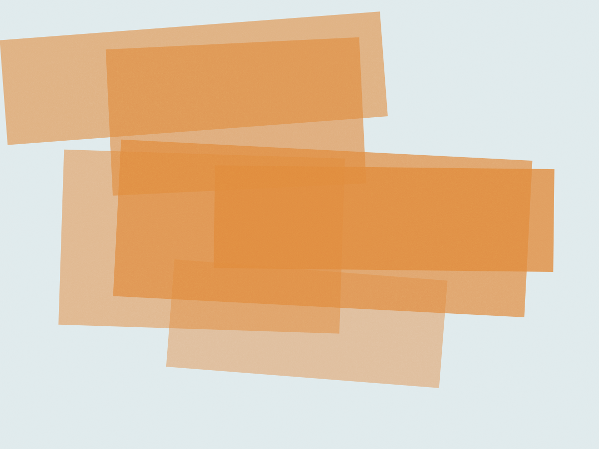

Cães e gatos de pequeno porte
Consulta com hora marcada e plantão até 22h
A consulta dura 40 minutos e custa R$ 180, com retorno em 15 dias incluso. Exame de sangue sai no mesmo dia e o raio-x fica pronto em pé, com laudo em 30 minutos. Depois das 20h a porta dos fundos segue aberta para emergência.
- Consulta
- 40 min · R$ 180
- Retorno
- 15 dias, incluso
- Exames
- no mesmo dia
- Plantão
- até 22h, todo dia
- Caderneta
- lote e fabricante
Tabela
O que é feito aqui, com preço dito antes
Cirurgia e exame de imagem só entram na conta depois do orçamento impresso. Se o valor mudar no meio do procedimento, a recepção liga antes de continuar — não existe cobrança descoberta na saída.
Formas: pix, débito e crédito em até 3x sem juros.
Estacionamento conveniado na Rua Joaquim Távora.
- CV-01 Consulta clínica 40 minutos com o veterinário, receita impressa e retorno em 15 diasR$ 180
- CV-02 Consulta de retorno dentro dos 15 dias, para reavaliar o mesmo quadroisenta
- VAC-03 Vacina V8 ou V10 dose com número de lote e fabricante anotados na cadernetaR$ 120
- VAC-04 Antirrábica a partir dos 4 meses, com comprovante para viagemR$ 90
- LAB-05 Hemograma e perfil bioquímico coleta com jejum de 8h, resultado no fim do dia por WhatsAppR$ 130
- IMG-06 Raio-x digital duas posições, laudo do radiologista em 30 minutosR$ 190
- IMG-07 Ultrassom abdominal com laudo em vídeo, precisa de jejum e bexiga cheiaR$ 240
- CIR-08 Castração anestesia inalatória com monitor de capnografia; R$ 420 a R$ 680 conforme o porteR$ 420+
- CIR-09 Limpeza de tártaro ultrassom dental, sem extração; extração é cobrada à parteR$ 350
- INT-10 Internação diária com fluido, medicação e boletim às 10h e às 18hR$ 210/dia
Três veterinários, três cabeças diferentes
Quem examina o seu animal é quem assina o receituário — não tem rodízio de plantão nem estagiário atendendo sozinho.
- Dra. Ivone Sampaio Clínica médica de cães. Formada pela USP, 21 anos de consultório. Atende segunda, terça e quinta.
- Dra. Talita Reis Cirurgia e ortopedia. Faz a castração de quarta e sexta e fecha os casos de fratura.
- Dr. Nelson Fujii Dermatologia e ouvido. Sábado é o dia de otite e de alergia de pele.

Filhote: três doses, 21 dias de intervalo
A caderneta é preenchida na frente do tutor, com data, lote e fabricante. Se a etiqueta do frasco não bater com o que foi escrito, não assinamos.
| Idade | O que entra | Valor |
|---|---|---|
| 2 meses | 1ª dose V8/V10 | R$ 120 |
| 3 meses | 2ª dose V8/V10 | R$ 120 |
| 4 meses | 3ª dose V8/V10 + antirrábica | R$ 210 |
| a partir de 1 ano | reforço anual das duas | R$ 210 |
| gatos | V4 ou V5 + FeLV, conforme risco | R$ 140 |
- Traga a caderneta anterior, mesmo de outro veterinário. A gente transcreve.
- Filhote de raça grande: traga cedo. A janela entre a 1ª e a 2ª dose é curta e atraso de uma semana já muda o esquema.
- Vacina com febre acima de 39,5 °C não é aplicada. Remarcamos sem cobrar.
Quem já passou pela porta dos fundos
Cheguei 21h40 com o Bidu engasgado num pedaço de osso. Chamaram a Dra. Talita pelo celular, ela abriu a sala e eu fiquei vendo pelo vidro até ele voltar a respirar. Saí daqui às 23h com o raio-x na mão. Marta Nogueira, tutora do Bidu (shih-tzu, 9 anos) — Vila Mariana, cliente desde 2019
A Dra. Talita girou o monitor e explicou osso por osso antes de falar em cirurgia. Foi a primeira vez que entendi o que tinha na pata da Kiwi. Rodrigo Salles, tutor da Kiwi (gata SRD, 4 anos) — Saúde
- Consultas por dia
- 14, com 40 min cada
- Plantão
- por telefone até 22h
- Cirurgia
- terça, quarta e sexta
Horários
A recepção responde em até 2 horas úteis
A agenda abre com 8 dias de antecedência. Consulta de urgência entra no buraco do dia: ligue e a recepção encaixa entre um atendimento e outro.
| Dia | Recepção | Plantão |
|---|---|---|
| Segunda a sexta | 8h às 20h | até 22h |
| Sábado | 8h às 14h | até 22h |
| Domingo e feriado | fechado | só telefone |
Vila Mariana, São Paulo — SP, 04010-200
Metrô Ana Rosa, 550 m · sem escada na entrada